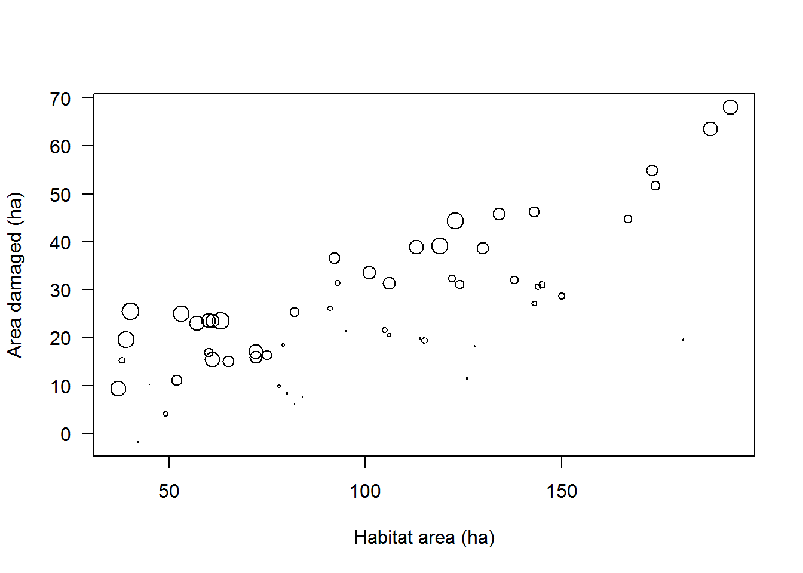
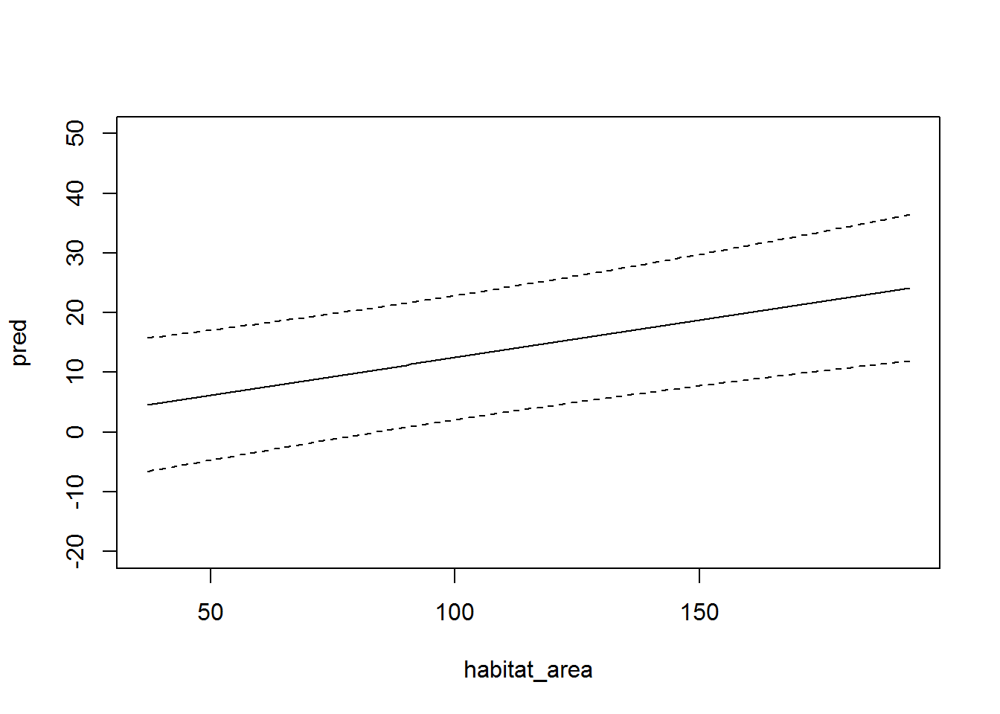
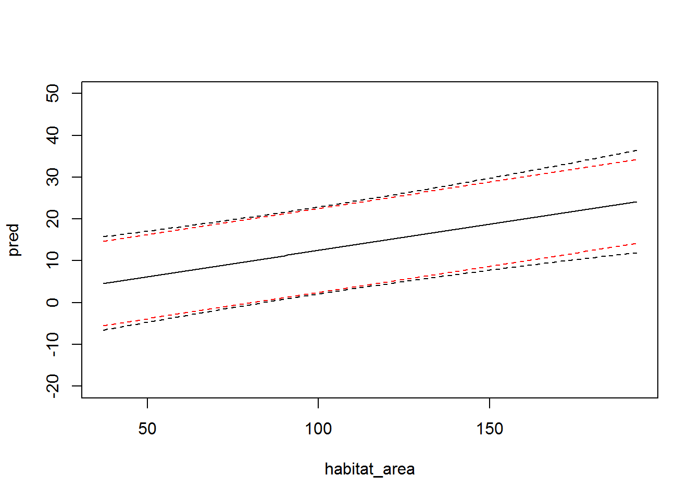
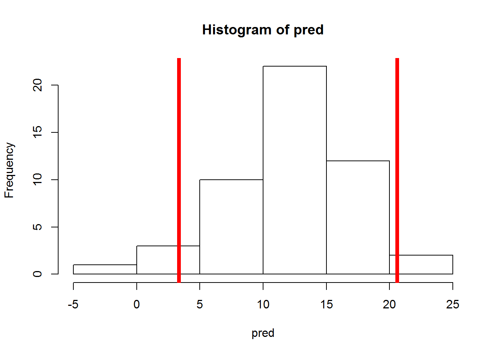
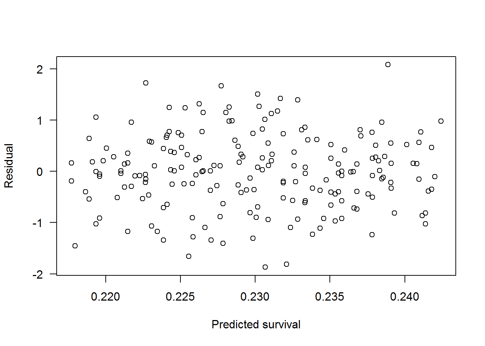
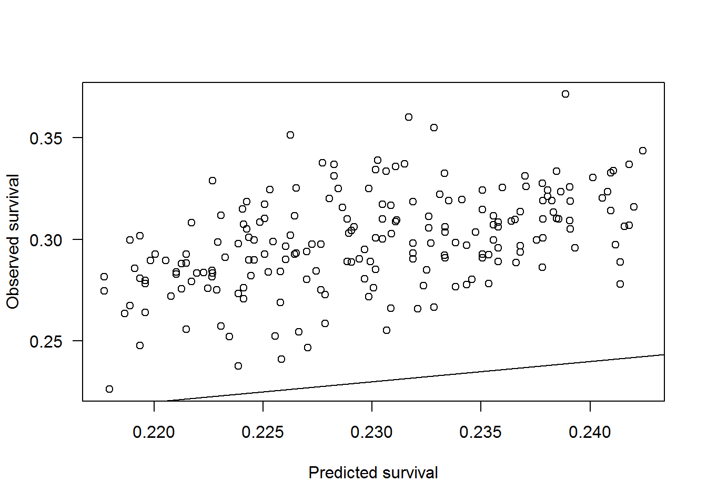
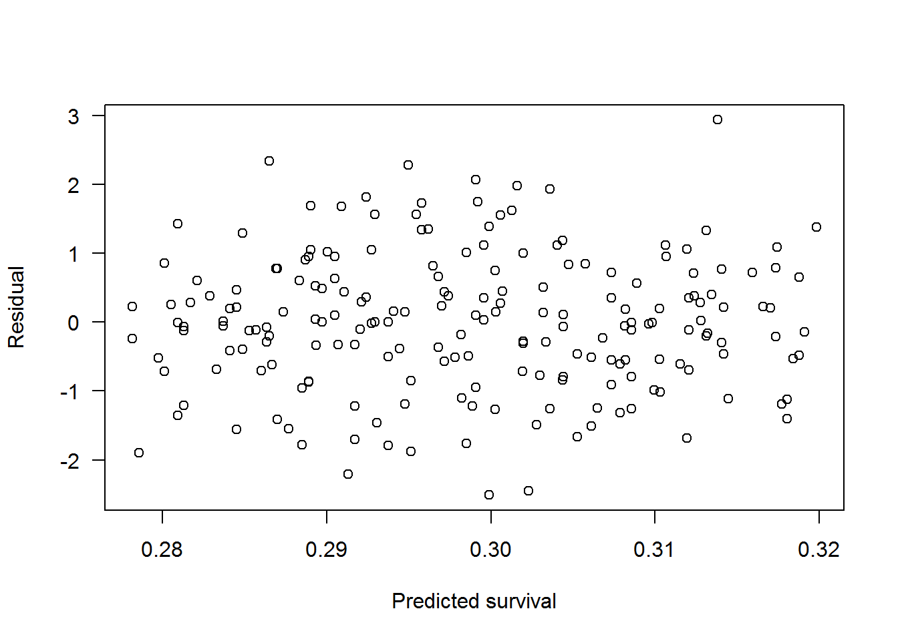
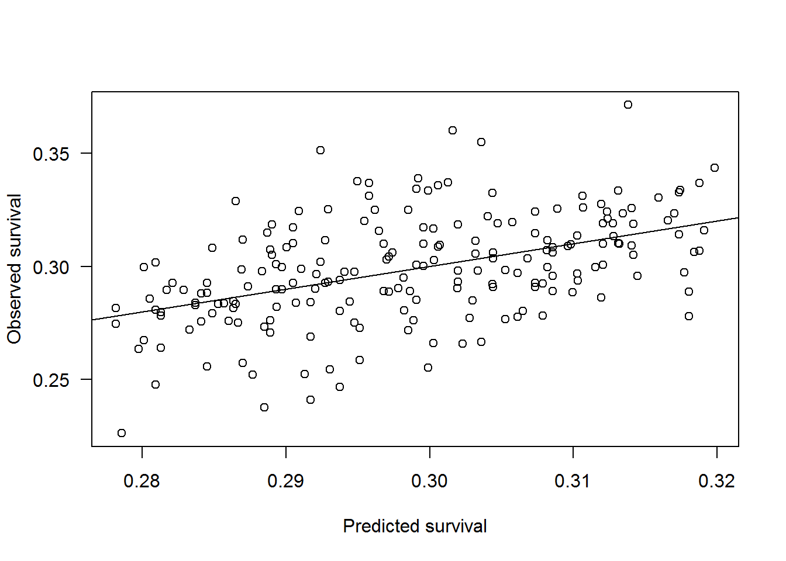
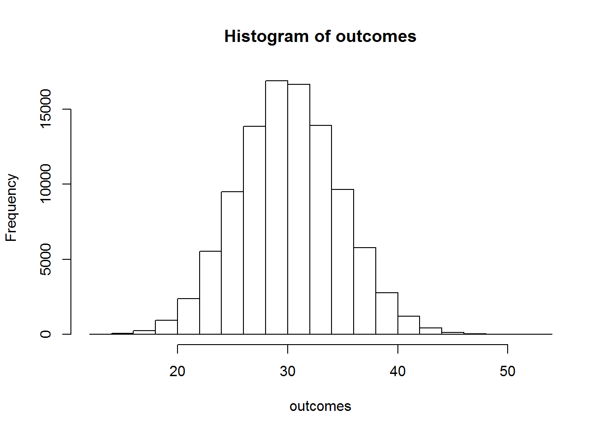

By the end of this tutorial you should be able to:
getwd() and make sure it is where your folder is.setwd() in the console.Okay. To this point I have introduced you to a number of object types in R. You then used functions on those objects to get R to do complicated things like fitting a linear model with lm(), extracting coefficients with coef(), or getting residuals with resid(). All three of those functions take an R object and preform some action the returns a value or values. The values returned can be a single value, a vector, a data.frame, or a list. There were a couple of functions that did not take an input. Recall getwd() and objects()?
The basics of a function is R is that you make a function that does something useful. The function can take if needed to perform the function. The general format is
myfunction<- function(arg1,arg2) { out<- 2*arg1 + arg2 # performs something return(out) # tells R what to return }
Let’s make a simple function that adds 2 and 6.
myfunction<- function()
{
out<- 2+6
return(out)
}Notice there are no inputs in the function above. This is because we specified everything we needed in the function, therefore no need for additional inputs. Let’s try it out.
myfunction()## [1] 8Neat, it returned the value 8.
Let’s try to make a more sophisticated function, one that returns a vector from 1 to 100!.
myfunction100<- function()
{
out<- 1:100
return(out)
}Let’s see if it works!
myfunction100()## [1] 1 2 3 4 5 6 7 8 9 10 11 12 13 14 15 16 17
## [18] 18 19 20 21 22 23 24 25 26 27 28 29 30 31 32 33 34
## [35] 35 36 37 38 39 40 41 42 43 44 45 46 47 48 49 50 51
## [52] 52 53 54 55 56 57 58 59 60 61 62 63 64 65 66 67 68
## [69] 69 70 71 72 73 74 75 76 77 78 79 80 81 82 83 84 85
## [86] 86 87 88 89 90 91 92 93 94 95 96 97 98 99 100Hopefully you are beginning to see how these might be useful! But we can go farther, suppose we want a function that will return a sequence of numbers from a user specified start and stop. Let’s call those x1 and x2 for start and stop respectively. The function to do this will look like.
myfunctionCustom<- function(x1,x2)
{
out<- x1:x2
return(out)
}Let’s see if it works!
myfunctionCustom(x1=3,x2=55)## [1] 3 4 5 6 7 8 9 10 11 12 13 14 15 16 17 18 19 20 21 22 23 24 25
## [24] 26 27 28 29 30 31 32 33 34 35 36 37 38 39 40 41 42 43 44 45 46 47 48
## [47] 49 50 51 52 53 54 55Boomtown! it returned a vector from 3 to 55!
Now what happens if we forget to specify an input?
myfunctionCustom(x1=3)Well that is no fun.
What happens if we forget to tell the function which input is which?
myfunctionCustom(3,55)## [1] 3 4 5 6 7 8 9 10 11 12 13 14 15 16 17 18 19 20 21 22 23 24 25
## [24] 26 27 28 29 30 31 32 33 34 35 36 37 38 39 40 41 42 43 44 45 46 47 48
## [47] 49 50 51 52 53 54 55It did the same things as myfunctionCustom(x1=3,x2=55). That is because R simply applies the inputs to the same order as the function was created.
myfunctionCustom(55,3)## [1] 55 54 53 52 51 50 49 48 47 46 45 44 43 42 41 40 39 38 37 36 35 34 33
## [24] 32 31 30 29 28 27 26 25 24 23 22 21 20 19 18 17 16 15 14 13 12 11 10
## [47] 9 8 7 6 5 4 3Well, that is odd. The vector is not quite I was expecting, it is 55 to 3 rather than 3 to 55! That is because R is automatically assigning 55 to x1 and 3 to x2 becuase that was the original order of the inputs in the function. Lets check to make sure. To see the guts of most functions we can type the function in the console without () like this:
myfunctionCustom## function(x1,x2)
## {
## out<- x1:x2
## return(out)
## }
## <environment: 0x10eaa484>Yep it has x1 as being the first input and x2 as the second. The input order does not matter if we specify the inputs in the function.
myfunctionCustom(x2=55,x1=3)## [1] 3 4 5 6 7 8 9 10 11 12 13 14 15 16 17 18 19 20 21 22 23 24 25
## [24] 26 27 28 29 30 31 32 33 34 35 36 37 38 39 40 41 42 43 44 45 46 47 48
## [47] 49 50 51 52 53 54 55Now one last be before we are done with functions. Recall that when we ran myfunctionCustom(x1=3) it did not run and returned an error? That was because we did not specify x2.
In the original function we can specify default values that R will use if there is no value present. For example, let’s set the default values for x1 and x2 in our function to 1 and 100 respectively.
myfunctionCustom<- function(x1=1,x2=100)
{
out<- x1:x2
return(out)
}Now if I do not specify any inputs I will get a vector from 1 to 100.
myfunctionCustom()## [1] 1 2 3 4 5 6 7 8 9 10 11 12 13 14 15 16 17
## [18] 18 19 20 21 22 23 24 25 26 27 28 29 30 31 32 33 34
## [35] 35 36 37 38 39 40 41 42 43 44 45 46 47 48 49 50 51
## [52] 52 53 54 55 56 57 58 59 60 61 62 63 64 65 66 67 68
## [69] 69 70 71 72 73 74 75 76 77 78 79 80 81 82 83 84 85
## [86] 86 87 88 89 90 91 92 93 94 95 96 97 98 99 100Or if I only specify x1 as 50 I will get a vector values from 50 to 100.
myfunctionCustom(x1=50)## [1] 50 51 52 53 54 55 56 57 58 59 60 61 62 63 64 65 66
## [18] 67 68 69 70 71 72 73 74 75 76 77 78 79 80 81 82 83
## [35] 84 85 86 87 88 89 90 91 92 93 94 95 96 97 98 99 100Alternatively I can only specify x2 as 66 and it returns a vector of 1 to 60.
myfunctionCustom(x2=66)## [1] 1 2 3 4 5 6 7 8 9 10 11 12 13 14 15 16 17 18 19 20 21 22 23
## [24] 24 25 26 27 28 29 30 31 32 33 34 35 36 37 38 39 40 41 42 43 44 45 46
## [47] 47 48 49 50 51 52 53 54 55 56 57 58 59 60 61 62 63 64 65 66Why is knowing how function works important? Well, it will help out immensely when we are dealing with discrete outcomes that result from Bernoulli, Binomial, or Poisson distributions. But first let’s revisit our old friend the linear model that assumes a normal distribution. Recall, the predictive model was:
\[\mu = \beta_0 + \beta_i\cdot X_i \]
where
The link the prediction to data using a statistical model to account for uncertainty as:
\[Y_i \sim Normal(\mu,\sigma)\]
# THIS WILL READ IN THE CSV FILE FROM YOUR WORKING
# DIRECTORY
damage_dat<- read.csv("damage-data.csv")
head(damage_dat)## habitat_area group_size area_damaged
## 1 106 12 20.5
## 2 134 35 45.9
## 3 143 31 46.2
## 4 40 49 25.5
## 5 61 43 15.4
## 6 72 35 16.0Recall that we rescaled our group sizes so we could view the interaction of group size and area. Let’s do that again and take a look.
# scale group size
damage_dat$group_size_scl<- (damage_dat$group_size-0)/(max(damage_dat$group_size)-0)Now we can take a look at the plot again.
plot(area_damaged~habitat_area, damage_dat,
xlab="Habitat area (ha)",
ylab="Area damaged (ha)",
las=1,
cex=damage_dat$group_size_scl*2)# double the scale
We go and fit that model again.
fit<- lm(area_damaged~habitat_area+group_size+habitat_area:group_size,
data=damage_dat)Now we can make predictions of possible outcomes using our statistical model. First we need some data to predict outcomes for. When we deal with interactions we generally want to make predictions for all possible combinations of habitat area and group size. The expand.grid() function will do this for us.
preddat<- expand.grid(
habitat_area=c(min(damage_dat$habitat_area):max(damage_dat$habitat_area)),
group_size= c(min(damage_dat$group_size):max(damage_dat$group_size)))Using the new data.frame preddat we can make 95% prediction intervals. Now these are different than confidence intervals, they are wider.
predicted<- predict(fit, preddat,
interval="prediction",
level=0.95)Let’s check and see what kind of object we are dealing with.
class(predicted)## [1] "matrix"What? A matrix? That is not what I was expecting. If we convert the matrix to a data.frame it is easier to deal with because we can use $ to get each column rather than []
predicted<- as.data.frame(predicted)Now that we have coerced the matrix into a data.frame we can add it to our predicted data.
preddat$pred<-predicted$fit
preddat$lci_exact<-predicted$lwr
preddat$uci_exact<-predicted$uprLet’s take a look at them intervals.
plot(pred~habitat_area, preddat,
subset=group_size==3,type='l',ylim=c(-20,50))
# exact prediction intervals
points( lci_exact~habitat_area, preddat,
subset=group_size==3,type='l',lty=2)
points( uci_exact~habitat_area, preddat,
subset=group_size==3,type='l',lty=2)
We can also approximate prediction intervals with our statisical model.
Recall that:
\[Y_i \sim Normal(\mu,\sigma)\]
If we grab our residual standard error and multiply by a critical t-value. A t-value of 2, or 1.96 if you want to be exact is multiplied by the residual standard error gives approximate 95% prediction intervals.
sigma<- summary(fit)$sigma
preddat$lci_approximate<- preddat$pred-2*sigma
preddat$uci_approximate<-preddat$pred+2*sigmaLet’s take a look and confirm this.
```r plot(pred~habitat_area, preddat, subset=group_size==3,type=‘l’,ylim=c(-20,50))
# exact prediction intervals points( lci_exact~habitat_area, preddat, subset=group_size==3,type=‘l’,lty=2) points( uci_exact~habitat_area, preddat, subset=group_size==3,type=‘l’,lty=2)
# add approximate prediction intervals points(lci_approximate~habitat_area, preddat, subset=group_size==3,type=‘l’,lty=2,col=‘red’) points(uci_approximate~habitat_area, preddat, subset=group_size==3,type=‘l’,lty=2,col=‘red’) ```

What is up with the difference? Well the difference is in the additional uncertainty around the estimates of the \(\beta\). You can see them using the vcov() function.
vcov(fit) # var-cov matrix of betas## (Intercept) habitat_area group_size
## (Intercept) 14.539116395 -1.300160e-01 -0.3884588626
## habitat_area -0.130015972 1.346081e-03 0.0035176198
## group_size -0.388458863 3.517620e-03 0.0130559343
## habitat_area:group_size 0.003556378 -3.789634e-05 -0.0001194418
## habitat_area:group_size
## (Intercept) 3.556378e-03
## habitat_area -3.789634e-05
## group_size -1.194418e-04
## habitat_area:group_size 1.317165e-06Now when dealing with a linear model with a normal distribution these uncertainties combine together pretty well. But once you start dealing with discrete distributions prediction intervals are not as clear cut, especially when it comes to uncertainty in the \(\beta\). But one way around it is to randomly sample your data, fit your model, and then make predictions. If you do this many many times you will approximate the prediction interval. The R code below does this for our linear model using a function.
bootpredata<- data.frame(habitat_area=100, group_size=3)
bootSimFun <- function(preddata,obsdata)
{
bootdat <- obsdata[sample(seq(nrow(obsdata)),# sample your data
size=nrow(obsdata),# how many samples?
replace=TRUE),] # sample with replacement
# fit the model
bootfit <- lm(area_damaged~habitat_area+
group_size+
habitat_area:group_size,
data=bootdat)
# Make predictions
bootpred <- predict(bootfit,newdata=preddata)
sigma<- summary(bootfit)$sigma
# Add uncertainty to prediction
out<- rnorm(length(bootpred),bootpred,sigma)
return(out)
}So we can put in our data we want to predict from bootpredata and our observed data damage_dat.
bootSimFun(preddat=bootpredata, obsdata=damage_dat)## [1] 10.88663And we a prediction. Yeah.
If we do this many times, by many I mean 100s of thousands. I only do a few here because it takes a bit of computer time. Using the for() we can loop over each simulation, 1,2,3,…50 and get a simulation. All we need to do is have an object to store our result in and we are good to go.
nsims<- 50
pred<- vector(length=nsims)
for(i in 1:nsims)
{
pred[i]<- bootSimFun(preddata=bootpredata, obsdata=damage_dat)
}We can look at the predictions.
hist(pred)
abline(v=quantile(pred,c(0.025,0.975)),col="red",lwd=5)
Let’s compare the exact solution and the bootstrap.
# the exact solution
preddat[preddat$group_size==3 & preddat$habitat_area==100,]## habitat_area group_size pred lci_exact uci_exact lci_approximate
## 64 100 3 12.49266 2.079407 22.90591 2.438405
## uci_approximate
## 64 22.54691and the bootstrap solution
quantile(pred,c(0.025,0.975))## 2.5% 97.5%
## 3.916235 22.593093If you do enough replicates it will get close to the exact solution. For the sake of time the code below is optimized for speed to run many bootstrap replicates. If you have some time to kill try running for 0.5 million replicates.
So what was the point of all this? We have uncertainty associated with the estimates of the coefficients and overall uncertainty. By generating prediction intervals we can estimate the likelihood of an outcome or calculate the risk of an outcome. Long story short the linear model coupled with the statistical model can be used to make predictions and evaluate the likelihood of an outcome. The probability associated with that outcome can be quantified by the linear model and calculated using an exact solution or an approximate solution by simulation. This is all very important for using data to make decisions. This will become useful when we start to look at outcomes that are not continuous, like counts, occupancy, and so on. But also realizing you are probably doing a good enough job with \(\sigma\) as your uncertainty.
The previous example was a bit odd. When we calculated the prediction intervals were negative in some cases. It seems to me that you should not have a negative amount of habitat damaged as a possible outcome, even if that outcome has a very small probability of happening. Right? Well when you are trying to model proportions or parts of a whole a binomial distribution comes in pretty darn handy. Examples of a binomially distributed value include:
The gist here is that you have integers that can be viewed as trials and successes or failure. For example if you have 100 critters in a tank and 40 of them survive there were 40 successes and 60 failures. Similarly if there are 100 critters in a plot and you capture 70 of them there were 70 successes and 30 failures.
Now you may be asking yourself why don’t I just calculate the probabilities and go from there? Well, 2 reasons come to mind.
Natural resource data is rarely equal sizes, for example the precision around 5/10 versus 50/100 are very different and it seems a shame to lose that information.
Many times we need to be able to predict an outcome given an input. For example, if I have 1000 critters, how many might die if we translocate them? The predictions from a binomial are a whole number which makes biological sense.
Here we have a data set of with 4 columns quantifying temperature, what truck was used, number of critters translocated, and the number that survived.
Go ahead and read in the data, assuming it is in your working directory.
dat<- read.csv("transport-mortality-data.csv")Take a look at the first couple of rows
head(dat)## temperature truck n_translocated n_survived
## 1 7.3 truck 2 442 140
## 2 9.0 truck 2 587 163
## 3 9.5 truck 2 410 114
## 4 3.3 truck 2 578 159
## 5 4.6 truck 1 461 127
## 6 5.2 truck 2 287 73The model looks familiar, we have seen the right hand side before, the only new thing we are seeing is the logit() function and p. Well to fit a linear model to value that is bound between 0 and 1 we need to transform those values. The most common way to do that is to take the log of of the odds $logit(p)log() which gives values that vary from about -20 to 20 or so.
\[\text{logit}(p) = \beta_{0}+ \beta_{1}\cdot\text{Temperature}+ \beta_{2}\cdot\text{Truck}+ \beta_{3}\cdot\text{Temperature}\cdot\text{Truck}\]
where
The statistical model linking the observed data to the linear model is:
\[\text{Number Survived}\sim Binomial(\text{Number Translocated},p)\]
where,
So in this case we are assuming the number of survivals is binomially distributed.
Now things get a little funky here we need to input 2 dependent variables into the model. Well based off the model above I bet it is the number that survived and the total number transported. Let’s give that a shot. We can combine them using the cbind() function.
fit<-glm(cbind(n_survived,n_translocated)~temperature+truck+temperature:truck,
data=dat,
family="binomial")Now that we have the model fit we can extract fitted and residual values just like we did for the linear model. Don’t believe me? Well here we go.
dat$pred<- fitted(fit) # get the fitted valuesNow we have to get the observed values. In this examples it is the proportion of fish that survived. We need to calculate that as the number survived divided by the number translocated.
dat$p<- dat$n_survived/dat$n_translocatedWe can also extract the residuals of to fitted model.
dat$resids<- resid(fit)Let’s do some due diligence and look at some plots just to make sure things look OK. Keep in mind that when dealing with discrete distributions like the binomial things get a bit tricky. So we evaluate the predicted proportion surviving that were predicted and observed.
plot(resids~pred,dat,
xlab="Predicted survival",
ylab="Residual",
las=1)
That looks ok to me…
plot(p~pred,data=dat,
xlab="Predicted survival",
ylab="Observed survival",
las=1)
abline(0,1)
That does not look ok to me. What the heck is going on? Well, turns out the glm function wants the dependent variable to be c(successes,failures) and not c(successes,total). Let’s fix that and see if makes things better. Ok. Here goes.
dat$n_mortalities<- dat$n_translocated-dat$n_survived
fit<-glm(cbind(n_survived,n_mortalities)~temperature+truck+temperature:truck,
data=dat, family="binomial")
dat$pred<- fitted(fit)
dat$p<- dat$n_survived/dat$n_translocated
dat$resids<- resid(fit)Just like we did before we can plot the residuals.
plot(resids~pred,dat,
xlab="Predicted survival",
ylab="Residual",
las=1)
They look good. Now we can plot the probability of surviving versus the predicted probability.
plot(p~pred,data=dat,
xlab="Predicted survival",
ylab="Observed survival",
las=1)
abline(0,1) Oh that is much better!
Recall that the statistical model for the binomial distribution was
\[Y_i \sim Binomial(N,p)\]
where,
Well we can start to make predictions of likely outcomes from that model given how many critters to translocate (\(N\)) and the probability of survival (\(p\)).
pdat<- data.frame(temperature=10,
truck=levels(dat$truck))Now let’s see if we can get prediction intervals like we did for the our linear model!
plink<-predict(fit,pdat,type="link", interval="prediction")
presponse<-predict(fit,pdat,type="response", interval="prediction")Well that ran without any warnings. Let’s look at them.
head(plink)## 1 2
## -0.8184927 -0.8019998head(presponse)## 1 2
## 0.3060837 0.3095979Boooo, no prediction intervals…. Well that is because prediction intervals are not supported for glm() in R. This is in part due to the difficult nature of constructing an interval for a discrete outcome and the links involved to make the prediction. But it did give us predictions of the expected survival which is nice. Lets see what is going on there in a bit more detail.
We can reconstruct the predictions of we exact the coefficients and use those to estimate the survival. In this example the effect of truck is a ‘dummy’ variable where truck 1 is equal to 0 and truck 2 is equal to 1. So if we plug and play we can get the predicted survival for translocating truck 1 and truck 2 of the temperature is 10 as follows.
betas<- coef(fit)
temp<- 10
tr1_est<- betas[1]+ betas[2]*temp + betas[3]*0 + betas[4]*0*temp
tr2_est<- betas[1]+ betas[2]*temp + betas[3]*1 + betas[4]*1*tempCool beans1. Let’s look at our predicted values.
tr1_est## (Intercept)
## -0.8184927tr2_est## (Intercept)
## -0.8019998That is weird, I was expecting the values to be somewheres between 0 and 1. Well we have to apply our link function. In the specification above we used the logit link to make a probability a value that is not constrained to live between 0 and 1. Similarly we can use the expit function to transform a value to something that is bounded between 0 and 1. Logit and expit are related functions. The expit function is:
\[p = \frac{exp(y)}{1+exp(y)}\]
whereas the logit function is
\[y = log(\frac{p}{1-p}).\]
Let’s confirm that is the case.
tr1_S<- exp(tr1_est)/(1+exp(tr1_est))# expit function
tr2_S<- exp(tr2_est)/(1+exp(tr2_est))# expit function
tr1_S## (Intercept)
## 0.3060837tr2_S## (Intercept)
## 0.3095979Ok. That all seemed to work. Lets try to convert tr1_S and tr2_S to log odds using the logit link.
try1<- log(tr1_S/(1-tr1_S))
tr1_est## (Intercept)
## -0.8184927try1 # should be close, within rounding error## (Intercept)
## -0.8184927Let’s do the estimate for truck 2
try2<- log(tr2_S/(1-tr2_S))
tr2_est## (Intercept)
## -0.8019998try2 # should be close, within rounding error## (Intercept)
## -0.8019998Cool, those functions are going to be really important. Be sure to remember that function exp(y)/(1+exp(y))! It is the basis for most capture recapture and occupancy models!
Now that we have a prediction of survival form our model we can estimate what the likely outcomes would be if we needed to translocate 100 critters and the temperature was 10.
The easiest way to think about the expected outcomes if you are not really good at probability is to simply simulate the potential outcomes and confirm for yourself. Fortunately R and a builtin in function for simulating from a binomial distribution rbinom() and all you have to specify for inputs are the number of simulations to make, the number of trials, and the probability of success.
First we will specify the number of trials, number of critters to translocate in this case.
translocate<- 100 # num. critters to translocateNow we can tell the rbinom() function how many simulations to make. We will go for 100000. Any large number will do to make sure you capture all the possible outcomes.
outcomes<- rbinom(100000,translocate, tr1_S)Let’s look at the outcomes to make sure things are right. It should be a vector with 100k elements in it.
length(outcomes)## [1] 100000Things look good. Now if we tabulate up the frequency of the outcomes we can get an idea of the uncertainty. The table() function will take a vector and count up the unique outcomes.
N_survive<-table(outcomes)
N_survive## outcomes
## 12 13 14 15 16 17 18 19 20 21 22 23 24 25 26
## 1 1 11 27 38 82 168 362 586 886 1490 2302 3237 4197 5295
## 27 28 29 30 31 32 33 34 35 36 37 38 39 40 41
## 6537 7332 8253 8629 8506 8160 7475 6458 5434 4211 3314 2457 1661 1114 726
## 42 43 44 45 46 47 48 49 50 51 53
## 469 260 164 74 40 24 6 9 2 1 1We can also look at a histogram of the outcomes.
hist(outcomes)
And we can calculate the probability of each outcome by summing the how many simulations we drew and dividing the frequency by the total.
N_survive_p<-N_survive/sum(N_survive)I need to note that these are conditional probabilities. They give the probability of specific outcomes conditional on the inputs, number of critters to transport, truck, and temperature in this case. For this example the outcomes are conditional on temperature being 10, truck 1 being used, and 100 critters being translocated. Overall, they should sum to 1 as this is all the possible outcomes. Let’s check to make sure.
sum(N_survive_p)# check to see if it sums to 1## [1] 1Yep, it does.
We could enter those values into a decision Model as the possible outcomes for using truck 1
We can use these values to quantify risk. For example what is the probability of mortality exceeding 35 critters? First we can count up how many of our simulations had a mortality exceeding 35 critters using the length() function. The length() function takes a vector and returns how many elements are in it.
grt35<- length(outcomes[outcomes>35])Now if we divide that by the number of simulations we did then we get the probability of that outcome occurring.
grt35/length(outcomes)## [1] 0.14533We can take our conditional probabilities and put them directly into a decision model. More on that later in the semester.
An we can use R to figure out what all the conditional probabilities would be for the network above. First we need to make all the possible combinations of states we have in our network.
combos<- expand.grid(
temperature=c(8,10,12,14),
ntranslocate=c(100,250,500,1000),
truck=c("truck 1","truck 2"))Then we need to get the survival estimate from our fitted model.
combos$S<- predict(fit,combos,type="response")
head(combos)## temperature ntranslocate truck S
## 1 8 100 truck 1 0.2978275
## 2 10 100 truck 1 0.3060837
## 3 12 100 truck 1 0.3144663
## 4 14 100 truck 1 0.3229716
## 5 8 250 truck 1 0.2978275
## 6 10 250 truck 1 0.3060837Now we just need to tabulate all the expected outcomes for each expected survival in the combos data.frame. Let’s see just how many combinations we have to evaluate.
nrow(combos)## [1] 32Whoa, that is a lot, remember that curse of dimensionality I talked about earlier in the semester?
Next class we will go over how to deal with getting all the possible outcomes and further dealing with this problem!